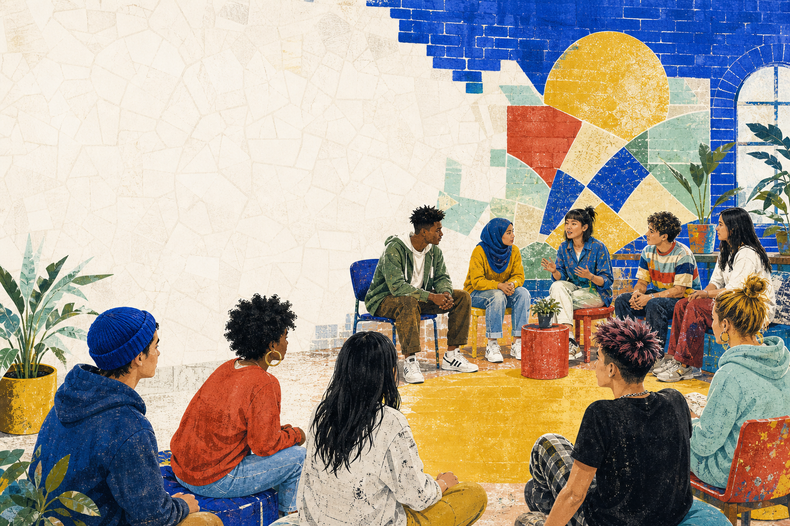
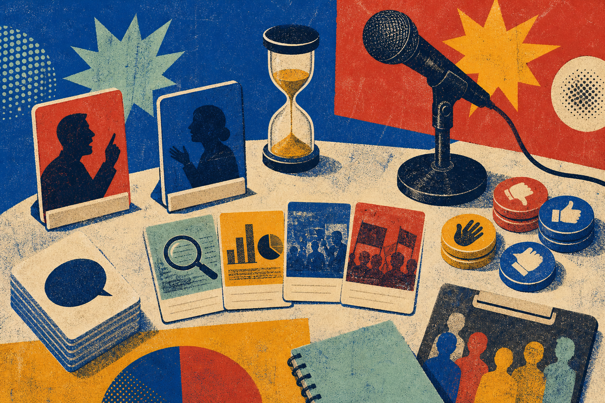
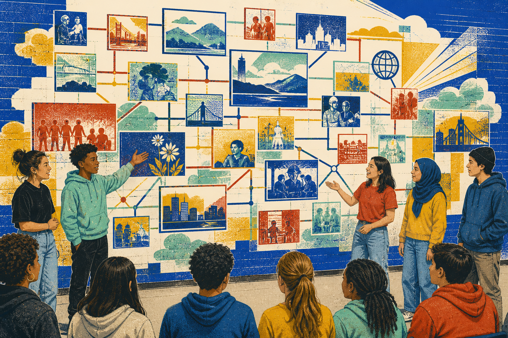

“24 of 30 students chose a later library closing time.”

Lesson 29 · Final speaking project
MAKE
YOUR CASE
Build an idea. Support it. Make the room care.
01 / Check-in pulse
How ready is
your voice?
Choose honestly. Today, preparation matters more than confidence.
02 / Lesson 28 remix
A listener needs
an invisible map.
OUR VIEWBECAUSEOUR REASONFOR EXAMPLEOUR PROOFTHEREFOREOUR ASK
Schools should create a quiet corner because students need a calm place. For example, 18 of 25 students in our class sometimes struggle to focus. Therefore, we propose a two-week trial.
Try it Replace the topic, but keep the listener’s map clear.
03 / Mission
By the end, your idea
will stand on its own.
01Choose a focused claim
02Support it with useful evidence
03Present or debate with clear structure
04Answer questions respectfully
Pick one Which result would make the biggest difference to your speaking?
04 / Choose your format
Two routes.
One strong idea.
Choose a route to see your first instruction.
Prefer less pressure? Join a team as evidence lead, visual lead, timekeeper or question host.
05 / Topic spotlight
Find a topic with
a real decision inside.
Should schools create one phone-free break?
Can reasonable people disagree?Can we find examples?Can we suggest action?
Alternative Keep the category but invent your own question.
06 / Focus lab
Turn a broad topic
into a clear claim.
Which one tells the audience exactly what you believe?
WHO+SHOULD / SHOULD NOT+DO WHAT+WHERE OR WHEN

07 / Picture hunt
What proof
can you find?
surveyexamplecomparisonvisual
Point to one item. Explain what claim it could support.
08 / Evidence court
Would you trust
this support?
“My cousin studies better with music.”
“Everyone knows group work is always better.”
Score: 0 / 3 · Judge the detail, then explain your reason.
09 / Claim builder
Make your claim
repeatable.
Our school should create a weekly no-homework evening.
Repeat test A partner listens once, looks away and repeats the claim.
11 / Model pitch
Listen for the
four-part shape.
Claim · evidence · response · ask
Our school should test one phone-free break each day. First, a short break from notifications could help students talk face to face. In our class poll, 19 of 27 students said phones sometimes stop real conversations. Some students may need a phone for family messages; however, urgent messages can still go through the office. Therefore, I recommend a two-week trial followed by another student poll.
Alternative Read in pairs: Speaker A reads the claim and evidence; Speaker B reads the counterpoint and ask.
12 / Pitch X-ray
Tap the line.
Name its job.
0 / 4 jobs revealed.
13 / Presentation route
Open the door.
Guide the room.
- HOOK“When was the last time…?”
- CLAIMSay your position in one sentence.
- 2 POINTSReason → example → meaning.
- RESPONSERecognize one concern.
- CLOSERepeat the message + ask for action.
TARGET: 2–3 MINUTES · SOLO OR TEAM
14 / Debate route
Build your side.
Meet the other side.
- POSITION“We believe…” + one reason.
- PROOFUse an example, comparison or small survey.
- LISTENWrite the other side’s strongest point.
- REBUTRecognize → contrast → support.
- WEIGHExplain why your benefit matters more.
TARGET: 90-SECOND OPENING + 45-SECOND REBUTTAL
15 / Language wardrobe
Dress the idea
for its job.
Choose a job to reveal a useful sentence frame.
Make it yours Keep the structure. Change the topic, evidence and action.
16 / Rebuttal ladder
Disagree without
closing the conversation.
Climb in order: recognize → contrast → support.
Other natural openings: “That is one possibility. Another is…” · “I partly agree, but…”
17 / Response duel
Which reply
earns the mic?
Other side: “A phone-free break is unfair because some students need to contact family.”
Choose the reply that recognizes the concern and answers it.
18 / Argument repair shop
Strong does not
mean dramatic.
Tap only after you can suggest a more accurate sentence.
19 / Visual direction
Make the visual
do one clear job.
Choose the visual an audience can understand in three seconds.
1 message 1 strong image or number 3 keywords maximum

20 / Visual synthesis
Connect the
pieces aloud.
“This evidence connects to our claim because…”
“The other side may focus on…, however…”
“Our final action is…, therefore…”
21 / Q&A rescue deck
Stay calm when
the question is difficult.
Choose a situation to reveal a natural response.
22 / Role switchboard
Build a team where
everyone matters.
Speaker 1 · hook + claimSpeaker 2 · evidenceSpeaker 3 · response + closeModerator · time + questions
QUIETER ROLE evidence navigator or visual operator CHALLENGE ROLE rebuttal speaker or question host
23 / Project canvas
Turn planning into
a speaking route.
Your canvas saves on this device.
24 / Rehearsal director
Do not practise
everything at once.
Choose a rehearsal take. Your partner gets one listening job.
Camera-shy? Rehearse audio-only first, then stand for the final take.
25 / Final performance
THE FORUM
IS LIVE.
01:30
AUDIENCE MISSIONWrite the claim in eight words or fewer.
26 / Feedback mosaic
Add one tile
that helps.
0 tiles added · Choose a tile, then name the exact moment you noticed.
27 / Exit ticket
Your voice leaves
a piece behind.
Choose one final tile and complete the sentence.